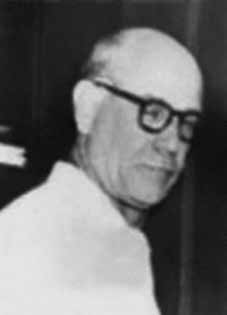

Lincoln
Cordeiro
Oest
CIRCUNSTÂNCIAS DA MORTE
Lincoln Cordeiro Oest morreu no dia 21 de dezembro de 1972, após ter sido preso e torturado por agentes da repressão no Destacamento de Operações de Informações – Centro de Operações de Defesa Interna no Rio de Janeiro (DOI-CODI/RJ) do I Exército. De acordo com a versão oficial apresentada na ocasião pelas forças de segurança do Estado, Lincoln Cordeiro morreu em decorrência da tentativa de fuga no momento de sua prisão. Segundo relato do livro Direito à memória e à verdade, da CEMDP, no registro do DOPS nº 1.517/72, do dia 20 de dezembro de 1972, o comissário do dia, Manoel Conde Júnior, fez a seguinte observação: […] às 23 horas, recebi comunicação telefônica, advinda do Comissário, Dr. Borges Fortes, de que fora informado ter havido pouco antes, encontro entre agentes das áreas de segurança nacional e elementos subversivos, fato que teria ocorrido em um terreno baldio na Rua Garcia Redondo, circunscrição da 23ª DP. Entretanto, o Laudo de Exame Cadavérico e a guia do Departamento de Ordem Política e Social da Guanabara (DOPS/GB), que encaminhou ao IML o corpo de Lincoln como sendo de um desconhecido, registram a hora da morte como tendo sido às 2h50 da madrugada do dia 20 para o dia 21 de dezembro, mesmo horário registrado na certidão de óbito de Lincoln Cordeiro Oest. Assim, é importante destacar a contradição existente na documentação oficial no tocante à hora em que teria ocorrido a morte de Lincoln Cordeiro Oest. Os depoimentos prestados à época pelos presos políticos José Auri Pinheiro e José Francisco dos Santos Rufino às auditorias militares, desconstroem a versão oficial da morte de Lincoln Cordeiro, que constam do acervo do projeto Brasil: nunca mais, da Arquidiocese de São Paulo. Os depoentes registram nova versão para o ocorrido, ao relatarem que Lincoln Cordeiro Oest fora preso e, em seguida, morto sob tortura por agentes nas dependências do DOI-CODI do I Exército. Segundo o testemunho de José Auri Pinheiro à CEMDP: […] naquele local onde recebeu as torturas, de início, um cidadão por nome Dr. Leônidas declarou que tinha sido exterminado Lincoln Cordeiro Oest”. Soma-se a esse depoimento, a declaração do preso político José Francisco dos Santos Rufino, para quem um policial “[…] falou, outrossim, sobre a morte de Lincoln Cordeiro Oest; que segundo referido policial, teria sido eliminado em suas mãos [(…]). Segundo a investigação da CEMDP, o exame realizado no cadáver de Lincoln Cordeiro indicou que o corpo do militante apresentava um grande número de disparos por arma de fogo e as fotos da perícia de local revelaram marcas de tortura. Para o relator da CEMDP, general Oswaldo Pereira Gomes, “todas as provas anexadas ao processo levam a crer que não houve tiroteio e Lincoln foi levado ao local em que morreu, sendo ali fuzilado”. Para a CNV, a versão oficial da morte de Lincoln Cordeiro Oest expressa o padrão do acobertamento dos homicídios perpetrados pela ditadura militar, com a produção de cenários falsos (tiroteios e atropelamentos de presos já mortos) para a ocultação da marcas de tortura, sendo modalidade preferencialmente escolhida pelos agentes da repressão para eliminar os opositores. O corpo de Lincoln Cordeiro Oest foi reconhecido por sua filha, Vânia Moniz Oest, somente no dia 6 de janeiro de 1973, e sepultado pela família no Cemitério São João Batista, no Rio de Janeiro (RJ).
Lincoln Cordeiro Oest died on December 21, 1972, after being arrested and tortured by repression agents at the Information Operations Detachment – Internal Defense Operations Center in Rio de Janeiro (DOI-CODI/RJ) of the 1st Army. According to the official version presented at the time by the State security forces, Lincoln Cordeiro died as a result of an escape attempt at the time of his arrest. According to a report in the book Direito à memory e à Verdade, by CEMDP, in DOPS record No. 1,517/72, dated December 20, 1972, the commissioner of the day, Manoel Conde Júnior, made the following observation: […] at 11 p.m., I received a telephone communication from the Commissioner, Dr. Borges Fortes, that he had been informed that there had been a meeting between agents from the areas of national security and subversive elements shortly before, an event that had occurred in a vacant lot on Rua Garcia Redondo, district of the 23rd DP. However, the Cadaveric Examination Report and the guide from the Department of Political and Social Order of Guanabara (DOPS/GB), which sent Lincoln's body to the IML as being that of an unknown person, record the time of death as having been at 2:50 in the morning of the 20th to the 21st of December, the same time recorded on Lincoln Cordeiro Oest's death certificate. Therefore, it is important to highlight the contradiction in the official documentation regarding the time at which Lincoln Cordeiro Oest's death occurred. The statements given at the time by political prisoners José Auri Pinheiro and José Francisco dos Santos Rufino to military audits, deconstruct the official version of Lincoln Cordeiro's death, which are included in the collection of the Brazil: never again project, of the Archdiocese of São Paulo. The deponents record a new version of what happened, when they report that Lincoln Cordeiro Oest was arrested and then killed under torture by agents on the premises of the DOI-CODI of the 1st Army. According to the testimony of José Auri Pinheiro to CEMDP: […] in that place where he was tortured, initially, a citizen named Dr. Leônidas declared that Lincoln Cordeiro Oest had been exterminated.” Added to this testimony was the statement of political prisoner José Francisco dos Santos Rufino, to whom a police officer “[…] also spoke about the death of Lincoln Cordeiro Oest; which, according to the aforementioned police officer, would have been eliminated in his hands [(…]). According to the CEMDP investigation, the examination carried out on Lincoln Cordeiro's corpse indicated that the militant's body had a large number of gunshot wounds and the photos taken from the scene revealed marks of torture. For the CEMDP rapporteur, General Oswaldo Pereira Gomes, “all the evidence attached to the process leads us to believe that there was no shooting and Lincoln was taken to the place where he died, where he was shot”. For the CNV, the official version of the death of Lincoln Cordeiro Oest expresses the pattern of covering up the homicides perpetrated by the military dictatorship, with the production of false scenarios (shootings and running over dead prisoners) to hide the marks of torture, being the modality preferably chosen by agents of repression to eliminate opponents. Lincoln Cordeiro Oest's body was recognized by his daughter, Vânia Moniz Oest, only on January 6, 1973, and buried by the family in the São João Batista Cemetery, in Rio de Janeiro (RJ).
Lincoln Cordeiro Oest murió el 21 de diciembre de 1972, luego de ser detenido y torturado por agentes de represión en el Destacamento de Operaciones de Información – Centro de Operaciones de Defensa Interna de Río de Janeiro (DOI-CODI/RJ) del 1.er Ejército. Según la versión oficial presentada en su momento por las fuerzas de seguridad del Estado, Lincoln Cordeiro murió como consecuencia de un intento de fuga al momento de su detención. Según informe del libro Direito à Memory e à Verdade, del CEMDP, en el expediente DOPS N° 1.517/72, de 20 de diciembre de 1972, el comisario de turno, Manoel Conde Júnior, hizo la siguiente observación: […] a las 23 horas recibí una comunicación telefónica del comisario, Dr. Borges Fortes, que había sido informado que había habido una reunión entre agentes de las áreas de elementos de seguridad y subversivos poco antes, hecho ocurrido en un terreno baldío de la Rua García Redondo, distrito de la 23ª DP. Sin embargo, el Informe de Examen Cadavérico y la guía del Departamento de Orden Político y Social de Guanabara (DOPS/GB), que envió el cuerpo de Lincoln al IML como de persona desconocida, registran la hora de la muerte como a las 2:50 de la madrugada del 20 al 21 de diciembre, misma hora registrada en el certificado de defunción de Lincoln Cordeiro Oest. Por ello, es importante resaltar la contradicción en la documentación oficial respecto del momento en que ocurrió la muerte de Lincoln Cordeiro Oest. Las declaraciones dadas en su momento por los presos políticos José Auri Pinheiro y José Francisco dos Santos Rufino ante auditorías militares, deconstruyen la versión oficial de la muerte de Lincoln Cordeiro, que están incluidas en la colección del proyecto Brasil: nunca más, de la Arquidiócesis de São Paulo. Los declarantes registran una nueva versión de lo sucedido, cuando informan que Lincoln Cordeiro Oest fue detenido y luego asesinado bajo tortura por agentes en las instalaciones del DOI-CODI del 1º Ejército. Según testimonio de José Auri Pinheiro al CEMDP: […] en ese lugar donde fue torturado, inicialmente, un ciudadano llamado Dr. Leônidas declaró que Lincoln Cordeiro Oest había sido exterminado”. A este testimonio se sumó la declaración del preso político José Francisco dos Santos Rufino, a quien un policía “[…] también le habló de la muerte de Lincoln Cordeiro Oest; el cual, según el citado policía, habría sido eliminado en sus manos [(…]). Según la investigación del CEMDP, el examen realizado al cadáver de Lincoln Cordeiro indicó que el cuerpo del militante presentaba gran cantidad de impactos de bala y las fotografías tomadas en el lugar revelaron marcas de tortura. Para el relator del CEMDP, general Oswaldo Pereira Gomes, “todas las pruebas adjuntas al proceso nos llevan a creer que no hubo disparos y que Lincoln fue llevado al lugar donde murió, donde fue fusilado”. Para la CNV, la versión oficial de la muerte de Lincoln Cordeiro Oest expresa el patrón de encubrimiento de los homicidios perpetrados por la dictadura militar, con la producción de escenarios falsos (fusilamientos y atropellos de prisioneros muertos) para ocultar las marcas de las torturas, siendo la modalidad elegida preferentemente por los agentes de represión para eliminar a los opositores. El cuerpo de Lincoln Cordeiro Oest fue reconocido por su hija, Vânia Moniz Oest, recién el 6 de enero de 1973, y enterrado por la familia en el cementerio de São João Batista, en Río de Janeiro (RJ).